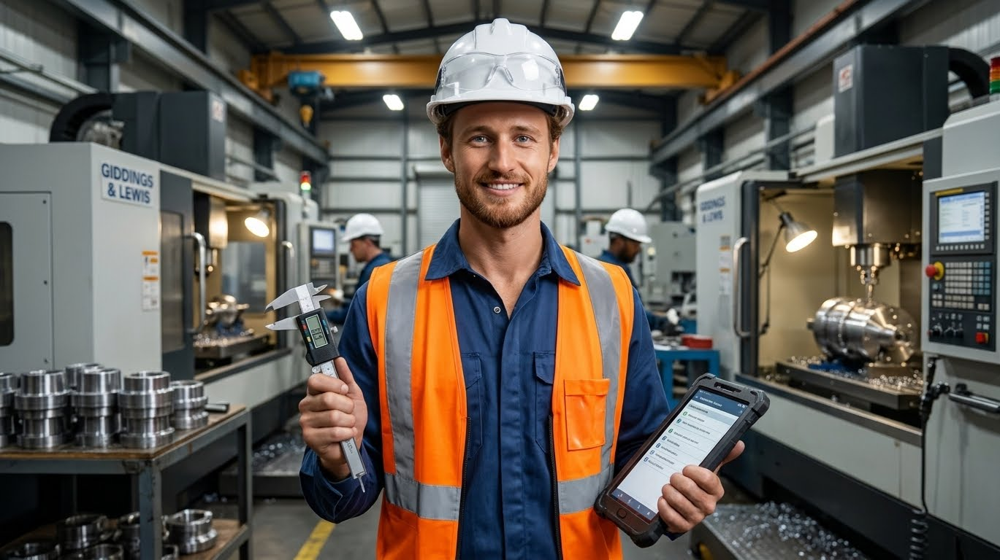

Carlos Mendoza
Director de Producción
Más de 15 años de experiencia optimizando procesos de deformación de chapa y utillajes especiales.
Innovando la industria del mañana
Fundada por especialistas del sector metalúrgico, NEOTEK nace con el objetivo de ofrecer servicios de plegado CNC de alta complejidad y calderería fina. Combinamos maquinaria sincronizada de última generación con operarios altamente cualificados en programación a pie de máquina y simulación 3D.
Nuestro compromiso se basa en la precisión milimétrica, el control de la recuperación elástica en cada lote de material y el cumplimiento estricto de los plazos de entrega.
Proceso de plegado CNC multieje y utillajes de precisión.
Director de Producción
Más de 15 años de experiencia optimizando procesos de deformación de chapa y utillajes especiales.
Responsable Oficina Técnica
Especialista en desarrollo de planos 3D, cálculo de fibra neutra y programación offline.
Jefe de Taller CNC
Experto en ajuste de plegadoras sincronizadas, selección de matrices en V y metrología.

Jefe de Calidad CNC
Experto en ajuste de plegadoras sincronizadas, selección de matrices en V y metrología.